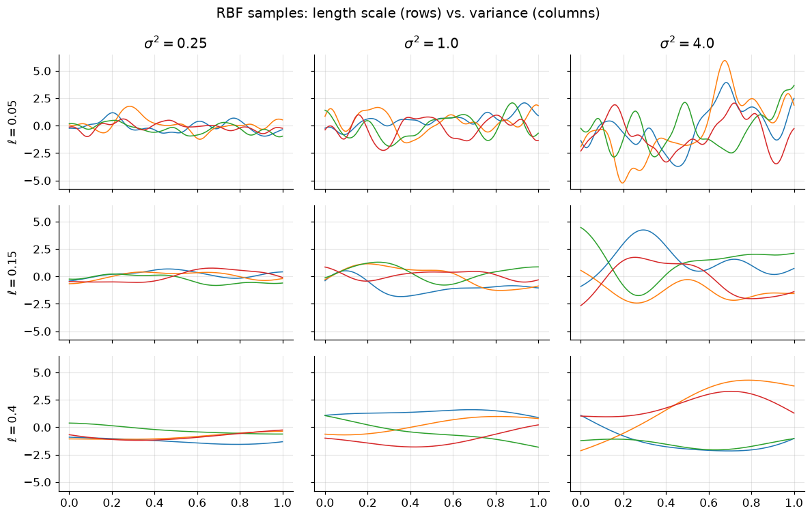
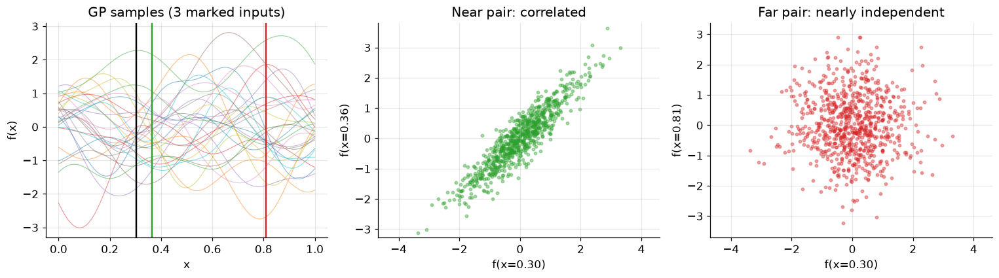
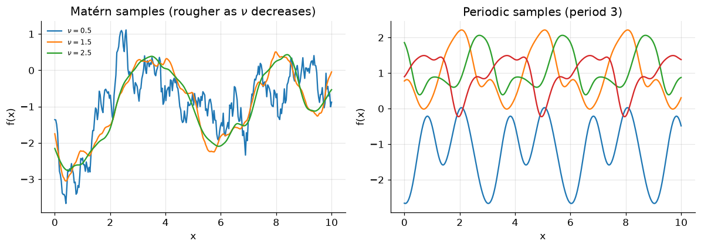

\(m(x)\): the mean of the function distribution at each input (here \(m\equiv 0\)).
\(k(x,x')\): the covariance: it sets both the amplitude and the smoothness of samples.
Other kernels encode other structure (e.g. periodicity §5).
The two RBF parameters play distinct roles: variance \(\sigma^2\) scales amplitude, length scale \(\ell\) scales wiggliness:
Code
xs = np.linspace(0.0, 1.0, 200)D = distance_matrix(xs[:, None], xs[:, None])ells = [0.05, 0.15, 0.4]sig2s = [0.25, 1.0, 4.0]fig, axes = plt.subplots(len(ells), len(sig2s), figsize=(11, 7), sharex=True, sharey=True)for r, ell inenumerate(ells):for c, s2 inenumerate(sig2s): K = s2 * np.exp(-D**2/ (2* ell**2)) +1e-9* np.eye(xs.size)for y in rng.multivariate_normal(np.zeros(xs.size), K, 4): axes[r, c].plot(xs, y, lw=1)if r ==0: axes[r, c].set_title(rf"$\sigma^2={s2}$")if c ==0: axes[r, c].set_ylabel(rf"$\ell={ell}$")fig.suptitle("RBF samples: length scale (rows) vs. variance (columns)")plt.tight_layout(); plt.show()

Any finite set of points is jointly Gaussian
This is the working definition. For inputs \(\pmb x_1,\dots,\pmb x_n\), the values \(f(\pmb x_1),\dots,f(\pmb x_n)\) are jointly Gaussian:
\[\pmb f \sim \mathcal{N}(\pmb m, K),\qquad
\pmb f = \begin{bmatrix} f(\pmb x_1)\\ \vdots\\ f(\pmb x_n)\end{bmatrix},\quad
\pmb m = \begin{bmatrix} m(\pmb x_1)\\ \vdots\\ m(\pmb x_n)\end{bmatrix},\quad
K_{ij} = k(\pmb x_i, \pmb x_j).\]
So at any two inputs the pair \((f(x_a), f(x_b))\) is a 2-D Gaussian, and the kernel sets its correlation: close inputs are tightly correlated, distant inputs nearly independent.
Code
xs = np.linspace(0.0, 1.0, 100)D = distance_matrix(xs[:, None], xs[:, None])K = np.exp(-D**2/ (2*0.15**2)) +1e-9* np.eye(xs.size)Y = rng.multivariate_normal(np.zeros(xs.size), K, 800)a, b_near, b_far =30, 36, 80# reference input, a near neighbor, a far onefig, ax = plt.subplots(1, 3, figsize=(14, 4))for y in Y[:30]: ax[0].plot(xs, y, lw=0.7, alpha=0.5)for idx, col in [(a, "k"), (b_near, "tab:green"), (b_far, "tab:red")]: ax[0].axvline(xs[idx], color=col, lw=1.6)ax[0].set(title="GP samples (3 marked inputs)", xlabel="x", ylabel="f(x)")ax[1].scatter(Y[:, a], Y[:, b_near], s=8, alpha=0.4, color="tab:green"); ax[1].axis("equal")ax[1].set(title="Near pair: correlated", xlabel=f"f(x={xs[a]:.2f})", ylabel=f"f(x={xs[b_near]:.2f})")ax[2].scatter(Y[:, a], Y[:, b_far], s=8, alpha=0.4, color="tab:red"); ax[2].axis("equal")ax[2].set(title="Far pair: nearly independent", xlabel=f"f(x={xs[a]:.2f})", ylabel=f"f(x={xs[b_far]:.2f})")plt.tight_layout(); plt.show()

2 · Two views: weight space and function space
ImportantWhere does the kernel come from?
§1 asserted a kernel. The function-space view derives it: a Gaussian prior on the weights of a linear model induces a Gaussian prior on functions, and that prior’s covariance is the kernel.
Start in weight space: Bayesian linear regression with a feature map \(\phi(x)\in\mathbb{R}^M\):
\[f(x) = \phi(x)^\top w,\qquad w \sim \mathcal{N}(\pmb 0,\ \sigma_p^2 I).\]
For example, a straight line is \(\phi(x)=[1, x]^\top\).)
Stack inputs into a feature matrix \(\Phi\in\mathbb{R}^{n\times M}\) (row \(i\) is \(\phi(x_i)^\top\)).
The function values \(\pmb f = \Phi w\) are a linear map of a Gaussian, hence Gaussian:
\[\pmb f = \Phi w \sim \mathcal{N}\!\big(\pmb 0,\ \sigma_p^2\,\Phi\Phi^\top\big).\]
Richer functions come from richer features: polynomials \(\phi=[1,x,x^2,\dots]\), Gaussian bumps, ReLUs, …
The kernel trick: we only ever need \(\phi(x)^\top\phi(x')\), so we can skip \(\phi\) and specify \(k\) directly. The RBF kernel corresponds to infinitely many Gaussian features
3 · Gaussian process regression
Scenario
We have noisy observations of an unknown \(F:\mathbb{R}^d\to\mathbb{R}\),
\[\pmb y = F(X) + \pmb\epsilon,\qquad \pmb\epsilon\sim\mathcal{N}(\pmb 0,\sigma^2 I),\]
at inputs \(X=[\pmb x_1,\dots,\pmb x_N]\), and we want to predict \(F\) at new inputs \(X_*=[\pmb x_{*1},\dots,\pmb x_{*M}]\). (The i.i.d. noise assumption can be relaxed.)
Joint distribution
Take a zero-mean GP prior with kernel \(k\). The observed values \(\pmb y\) and latent test values \(\pmb f_*\) are jointly Gaussian:
The mean is a smooth interpolant; \(P\) gives uncertainty that grows away from the data.
With no noise (\(\sigma^2=0\)) the mean passes exactly through the observations, but the solve is then less stable, hence a small jitter.
Learning hyperparameters
Kernel hyperparameters \(\theta\) (length scale, variance, noise) can be fixed by hand — useful when the GP is a prior — or learned from data by maximizing the marginal likelihood:
The kernel encodes your assumptions about the function. A few common choices:
RBF / squared-exponential: very smooth (infinitely differentiable) samples.
Matérn: a smoothness parameter \(\nu\); smaller \(\nu\) gives rougher samples, and \(\nu\to\infty\) recovers the RBF. \[k_\nu(x,x') = \frac{1}{\Gamma(\nu)2^{\nu-1}}\Big(\tfrac{\sqrt{2\nu}}{\ell}\,d\Big)^{\nu} K_\nu\!\Big(\tfrac{\sqrt{2\nu}}{\ell}\,d\Big),\qquad d=\lVert x-x'\rVert.\]
Periodic (ExpSineSquared): for seasonal or diurnal signals.
Kernels can be added and multiplied to combine structure; GPyTorch even supports a neural-network-parameterized kernel.
Code
from sklearn.gaussian_process.kernels import Matern, ExpSineSquaredxs = np.linspace(0.0, 10.0, 300).reshape(-1, 1)fig, ax = plt.subplots(1, 2, figsize=(11, 4))for nu in [0.5, 1.5, 2.5]: gp = GaussianProcessRegressor(kernel=Matern(length_scale=1.0, nu=nu)) ax[0].plot(xs, gp.sample_y(xs, n_samples=1, random_state=0), lw=1.5, label=rf"$\nu={nu}$")ax[0].set(title=r"Matérn samples (rougher as $\nu$ decreases)", xlabel="x", ylabel="f(x)")ax[0].legend(fontsize=8, frameon=False)gp = GaussianProcessRegressor(kernel=ExpSineSquared(length_scale=1.0, periodicity=3.0))for s in gp.sample_y(xs, n_samples=4, random_state=0).T: ax[1].plot(xs, s, lw=1.5)ax[1].set(title="Periodic samples (period 3)", xlabel="x", ylabel="f(x)")plt.tight_layout(); plt.show()

6 · Multiple output dimensions
The inputs can be any dimension, as long as the output is scalar.
For vector outputs, the simplest approach is one independent GP per output: \(\pmb y = [\mathrm{GP}_1(\pmb x),\dots,\mathrm{GP}_p(\pmb x)]\).
The curse of dimensionality applies to the input space: high-dimensional inputs need many points.
7 · Efficient inference
Cost is set by the number of training points \(n\), through the linear system with \(K_y = K(X,X)+\sigma^2 I\).
Precompute once
Factor \(K_y = LL^\top\) (Cholesky, \(O(n^3)\) once) and solve for \(\pmb\alpha = K_y^{-1}\pmb y\). The predictive mean at a test point is then a cheap dot product:
Given the Cholesky factor, the reduction term costs \(O(n^2)\) per test point (one triangular solve, then a dot product). Conditioning can only reduce variance: the second term is non-negative.
NoteCholesky solves, in one line
For an SPD matrix \(A=LL^\top\), solve \(A\pmb x=\pmb b\) as two triangular solves: \(L\pmb z=\pmb b\) (forward), then \(L^\top\pmb x=\pmb z\) (back), each \(O(n^2)\). (Same back-substitution idea as the adjoints companion.)
8 · Approximate GPs
The \(O(n^3)\) factorization makes exact GPs impractical beyond ~\(10^4\) points.
Inducing-point (sparse) methods summarize the data with \(m\ll n\) pseudo-inputs, dropping the cost to \(O(nm^2)\).
Other routes: structured kernels (Kronecker / Toeplitz), random features, and iterative conjugate-gradient solvers (GPyTorch).
9 · Applications in glaciology
GPs appear wherever we need interpolation with uncertainty, a prior over functions, or a fast surrogate:
Interpolation of sparsely observed fields, with calibrated error bars.